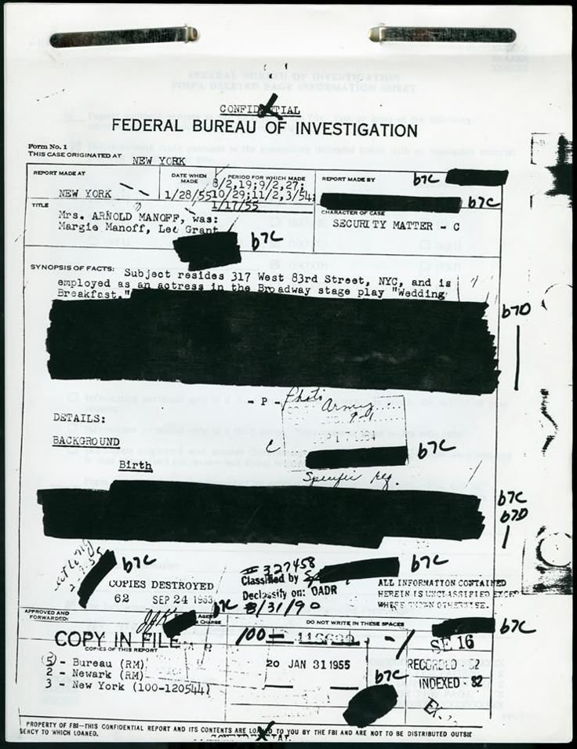
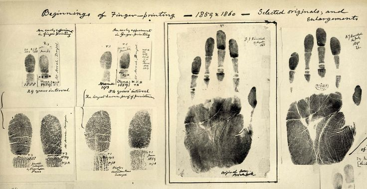

CASE FILE 001
BELLMONT MUNICIPAL CCTV — MIRROR ACCESS
FEEDS ONLINE —
23:41:08
2024.03.11
HOVER TO READ METADATA / CLICK A FEED TO ENLARGE / DRAG TO LOOK AROUND
Who disabled Camera 04?
FIND CAMERA 04
FEEDS CHECKED 00
left side stiff —
same as the Morrow St. videos
- CAM 03
- CAM 08
- CAM 14
- CAM 21
81% sure.
Wrong man.
# ARCHIVE / CAMERA 04 / MORROW STREET
**SOURCE:** CASE FILE 001 — EVIDENCE 03 **DATE:** 2023.10.02 **VICTIM:** ELIAS VANE, 54
SIGNAL LOST
00:00 / 05:00
RECORDING: OFF
LIVE OUTPUT: ON
VIEWERS: 1

CLICK THE REDACTIONS
0REGISTERED CITY CAMERAS
0UNREGISTERED NODES
0UNKNOWN RELAY POINTS
0ACTIVE OBSERVERS
## OUTCOMES ATTRIBUTED TO NETWORK W-13
- MISSING PERSONS LOCATED 31
- VIOLENT CRIMES PREVENTED 112 (EST.)
- CIVILIANS INDEXED 1,204,388
- CONSENT RECORDS 0
428 they admit to.
# INDEX / ACTIVE SUBJECT FILES
FILTER: ENHANCED / MASKED / OF INTEREST — 6 OF 2,331 SHOWN
019 was nine years old.

SIGNAL TERMINATED